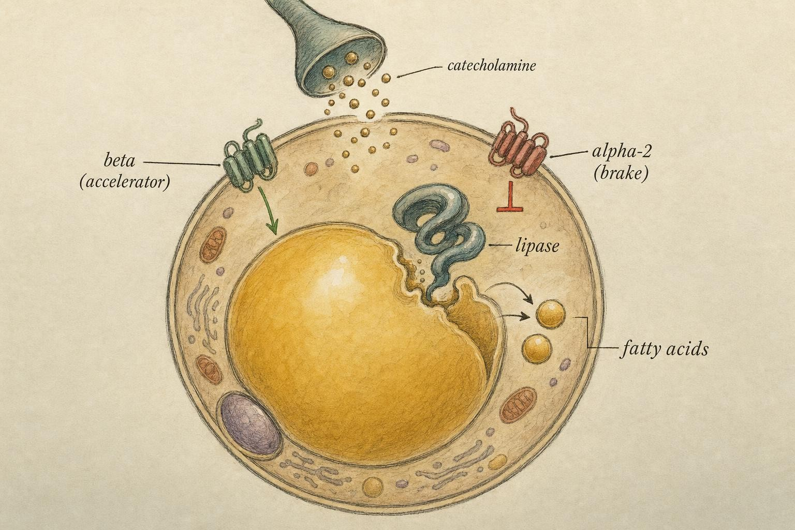
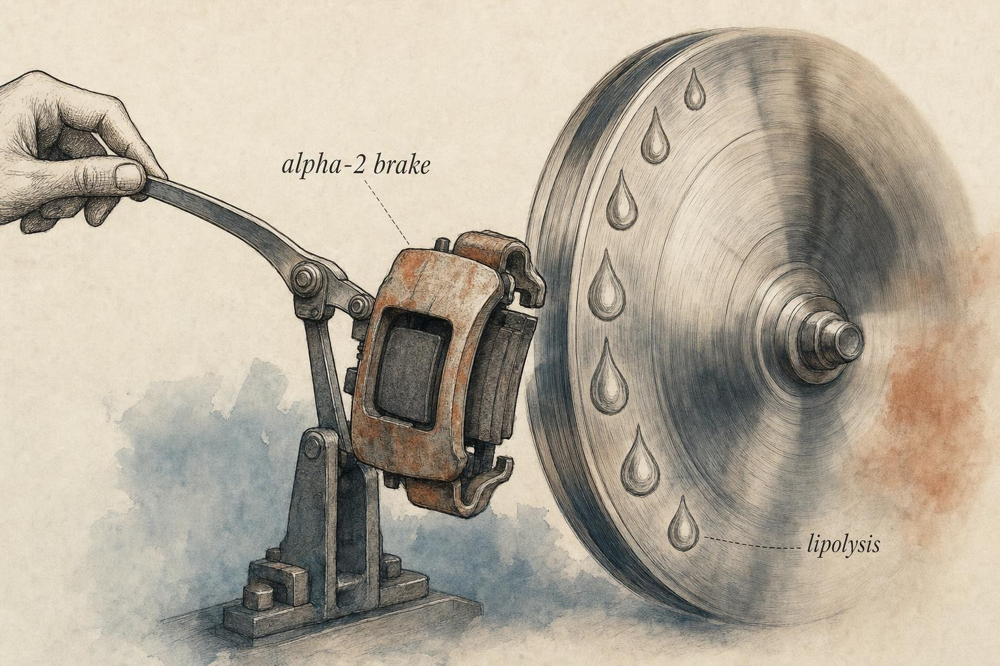

Grading the Thermogenic Shelf: What the Supplements Actually Do
Every popular fat-loss compound nudges one step in a cascade you already understand. Here is how to grade each one honestly.
Walk down the supplement aisle and you will see the same five or six active compounds recombined into a hundred proprietary blends, each with a name engineered to sound like a metabolic weapon. The marketing wants you to believe the shelf contains distinct technologies. It does not. Strip away the branding and almost every thermogenic product on that shelf is doing one of a small number of things to a cascade you have already mapped in Chapters 2 and 3: it either raises the catecholamine signal, removes a brake on that signal, or slows the enzymes that shut the signal down.
That is good news, because it means you do not have to trust the label. You can grade the compound. Once you know which step a molecule touches, the honest questions become answerable: how big is the effect, how reliably does it show up, and who is it actually for. This chapter walks the adrenergic and thermogenic shelf compound by compound and grades each one against those questions. It stops short of dosing, stacking, or protocols. The goal is judgment, not a recipe.
Throughout the chapter you will follow one recurring example, Priya, a 34-year-old amateur distance runner who has spent the last ten weeks in a calorie deficit ahead of a race she cares about. She is lean by most standards, disciplined about her training log, and increasingly frustrated that the last stubborn layer over her lower abdomen and hips will not move no matter how precisely she tracks her intake. A running club friend handed her three bottles: a pre-run stimulant blend, a green-tea extract capsule, and a bottle of yohimbine tablets someone swore by. Priya is not a case to be diagnosed and she is not a patient. She is a stand-in for the honest question every advanced, already-lean person eventually asks: does any of this actually do anything for someone in my specific situation, or am I buying the same four mechanisms over and over under new names. We will return to her shelf at several points, and by the end of the chapter you will be able to grade it more carefully than the friend who handed it to her.
A one-screen refresh of the cascade
Before we grade anything, let us put the map back on the table in compressed form, because every grade in this chapter is a claim about where on this map a molecule intervenes.
Fat mobilization from an adipocyte runs through a familiar chain. A catecholamine (noradrenaline released from sympathetic nerve terminals, or circulating adrenaline) arrives at the fat cell surface. There it meets two opposing families of receptors. The beta-adrenergic receptors are the accelerator: when a catecholamine binds them, they raise intracellular cyclic AMP, which activates hormone-sensitive lipase and its partners, and triglyceride is broken down into glycerol and free fatty acids that leave the cell. The alpha-2 adrenergic receptors are the brake: when a catecholamine binds them, they lower cyclic AMP and blunt the very same lipolysis. The net rate of fat release from any given depot is a tug-of-war between beta acceleration and alpha-2 braking.
That balance is not uniform across the body. Depots that stay stubbornly soft and cold even when you are lean, the lower-body and lower-abdominal fat many readers are chasing by Chapter 6, are exactly the depots richest in alpha-2 receptors and comparatively poor in beta responsiveness. This is the physiology behind the word "stubborn." It is not a metaphor. It is a receptor ratio.
Downstream of the fat cell sits the thermogenic side of the ledger. The same sympathetic signal that drives lipolysis also drives heat production, and the freed fatty acids can be oxidized rather than re-esterified. Finally, the whole signal has an off-switch. Catecholamines are cleared and degraded by enzymes, principally catechol-O-methyltransferase (COMT), and their release is fine-tuned by feedback at the nerve terminal. Slow the off-switch and the signal lingers longer.
Hold four intervention points in mind, because the whole shelf sorts onto them: (1) raise the catecholamine signal upstream, (2) release the alpha-2 brake at the fat cell, (3) prolong the signal by slowing its breakdown, and (4) trigger the sympathetic outflow from a different sensory entry point entirely. Caffeine, yohimbine, green-tea catechins, synephrine, and capsaicinoids each stake a claim to one of these, and their honest grades follow directly from which claim is true.
Notice something about that list before we go further: three of the four points push on the accelerator side of the tug-of-war (raise the signal, prolong the signal, or trigger a fresh burst of it through a sensory route) and only one, releasing the alpha-2 brake, touches the resistance side directly. That asymmetry matters. A person whose beta pathway is already being driven hard by training, dieting, and habitual stimulant use has comparatively little upstream slack left to add to. A person whose alpha-2 brake has never been touched has an entirely different kind of room to work with. This is exactly the fork Priya's shelf represents: two of her three bottles push the accelerator she is already leaning on, and one touches the brake she has never addressed.

The tug-of-war at the fat cell: beta acceleration against alpha-2 braking." data-image-idx="0" style="display:block;max-width:100%;max-height:75vh;height:auto;width:auto;margin:0 auto;cursor:pointer;">The grading rubric: four honest questions
Grading a supplement well means resisting two opposite errors. One is the label's error, treating a real but tiny effect as if it were decisive. The other is the cynic's error, treating "small" as if it meant "zero." A small, reliable, well-targeted effect can be worth deploying in the right person and worthless in the wrong one. To keep both errors out, run every compound through the same four questions.
1. Which exact step does it touch?
Not "it boosts metabolism." Which node on the cascade. If you cannot name the step, you cannot predict who will respond or what it will stack cleanly with. A compound that raises the upstream signal and a compound that releases the downstream brake are not interchangeable even if both "increase lipolysis," because they behave completely differently in a person whose signal is already high.
2. What is the honest effect size?
We will speak in the currency researchers actually report: standardized mean differences, percentage shifts in fat oxidation, kilograms over a trial. Almost every honest number on this shelf is small. That is not a criticism, it is the finding. The interesting work is deciding whether a small effect is meaningful in context.
3. How reliable is that effect?
Effect size is the average. Reliability is how tightly people cluster around it. A compound with a modest average and a narrow spread is more useful in practice than one with a larger average and enormous individual variation, because with the second you are gambling. Tolerance, training status, habitual intake, and genetics all widen or narrow the spread, and we will name them.
4. Who is it for, and who should skip it?
Population fit is where grades are won and lost. The same molecule can be a defensible tool for a lean, trained person deep in contest prep and a waste of stimulant load for a sedentary beginner. Fit also carries the safety conversation: stimulant burden, cardiovascular considerations, and the fact that "more mechanism" is not "more result."
One boundary before we begin. This chapter grades tools. It does not prescribe them, it does not tell you how much of anything to take, and it does not build stacks. Where a compound raises a genuine safety question, the honest move is to flag it and route the decision to a qualified clinician who knows the individual. Any symptom, adverse response, or cardiovascular concern is a sign that warrants professional evaluation, never something to diagnose from a chapter.
Caffeine: the upstream signal-raiser
Caffeine is the compound everyone underrates because it is cheap and familiar. Mechanistically it sits at intervention point one: it raises and prolongs the adrenergic signal that feeds the whole cascade. Its primary route is antagonism of adenosine receptors, chiefly the A1 and A2A subtypes. Adenosine normally acts as a brake on neuronal firing and on sympathetic outflow, so blocking its receptors disinhibits that outflow, which is a roundabout way of saying caffeine does not directly push the accelerator so much as it loosens a separate restraint on the whole nervous system. On top of that, caffeine modestly inhibits phosphodiesterase, the enzyme that breaks down cyclic AMP inside the cell, which slows the decay of the very second messenger that hormone-sensitive lipase depends on. The practical result of both actions together is more catecholamine drive reaching the fat cell and a slightly longer-lasting lipolytic signal once it arrives.
The evidence for the fat-oxidation effect is unusually clean because caffeine has been studied to exhaustion. According to Collado-Mateo and colleagues (2020), a meta-analysis of 19 crossover trials of acute caffeine before fasted exercise found a significant increase in fat oxidation rate, with a standardized mean difference (SMD, a way of expressing an effect size in pooled standard-deviation units so that studies using different measurement scales can be combined) of 0.73 and a 95 percent confidence interval (CI, the range within which the true effect most likely falls) of 0.19 to 1.27. The trials also showed a corresponding drop in the respiratory exchange ratio, consistent with a shift toward burning fat, and the authors reported a dose-response relationship, which is exactly what you want to see when you are trying to decide whether an effect is real: bigger nudge, bigger response.
But the honest grade lives in the moderators, and here caffeine's story turns into a lesson about reliability. According to a separate meta-analysis of 18 crossover trials during fed-state exercise, meaning the caffeine was taken with food in the system rather than fasted, the pooled effect was a comparable SMD of 0.65 (95 percent CI 0.20 to 1.20), but with a crucial caveat: the effect was present in untrained and caffeine-naive individuals and essentially absent in trained athletes and habitual caffeine consumers (Collado-Mateo et al., 2024). Read that twice. The people most likely to be reaching for a thermogenic, experienced trainees who already drink coffee all day, are the people in whom caffeine's fat-oxidation effect is most attenuated by tolerance. That attenuation is not mysterious. Chronic caffeine exposure upregulates adenosine receptor density and sensitivity, a classic tolerance mechanism, so the same dose occupies proportionally less of the receptor pool and disinhibits proportionally less sympathetic outflow.
So caffeine grades as a real, reasonably reliable, mechanistically well-understood signal-raiser whose magnitude is small and whose benefit is heavily front-loaded onto the caffeine-naive and untrained. Its most defensible use in an advanced context is arguably not thermogenic at all but ergogenic: it lets a fatigued, calorie-restricted person train harder, and the training is where most of the body-composition change is actually earned. Grade the performance effect, not just the fat-oxidation number, and caffeine looks better in the exact population where its thermogenic number looks worse. For someone like Priya, who has been drinking coffee daily for years and is now deep in a training block, the honest expectation from her pre-run blend is not a bigger thermogenic push. It is a training session that feels a notch less brutal, which over ten weeks compounds into more consistent mileage than a purely thermogenic framing would predict.
Yohimbine: releasing the brake you studied in Chapter 2
This is the standout case of the chapter, and the reason is precisely that yohimbine does not do what the other compounds do. It is not a signal-raiser. It is a selective alpha-2 antagonist: it sits on the alpha-2 receptor and blocks it, which means it releases the brake on lipolysis rather than pressing harder on the accelerator. On the cascade map it lives at intervention point two, and no other compound on this shelf shares that address. This is also why yohimbine cannot be graded by the same intuition you would apply to a stimulant. A bigger dose of a signal-raiser simply pushes harder on a pathway that may already be near its ceiling. A brake-releaser instead asks a completely different question: how much brake was actually being applied in the first place. In a person whose alpha-2 tone is low to begin with, releasing a brake that was barely engaged changes almost nothing.
The mechanism was worked out decades ago in the papers that still anchor the field. According to Lafontan and colleagues (1992), alpha-2 adrenoceptors are the physiological brake on catecholamine-driven lipolysis in human fat, and yohimbine, the prototype alpha-2 antagonist, could be used to lift that brake. Oral yohimbine produced a lasting rise in plasma free fatty acids and noradrenaline and a durable thermogenic effect, and notably it did so without significant cardiovascular disturbance in their conditions. A companion crossover study in fasting healthy men showed the same lipid-mobilizing signature: plasma glycerol and non-esterified fatty acids rose, resting heart rate and blood pressure were largely unchanged, and plasma norepinephrine climbed 40 to 50 percent (Galitzky et al., 1988).
Two details from that second study deserve to be pinned to your grading. First, the effect was reinforced during exercise and completely suppressed after a meal. Insulin, released with food, is a powerful antilipolytic signal that overrides the brake-release. A molecule that only works in the fasted, low-insulin state is a molecule whose window you have to respect. Second, blocking the beta pathway with propranolol only partially blunted yohimbine's action, which tells us it works two ways at once: directly by blocking alpha-2 on the fat cell, and indirectly by raising synaptic norepinephrine that then acts through beta receptors. It both removes the brake and, incidentally, feeds the accelerator.
Why it is framed around stubborn fat and leaner bodies
Return to the receptor map. Alpha-2 density is highest in the stubborn lower-body and lower-abdominal depots, and the alpha-2 brake matters most when the beta accelerator is already being pushed hard, which is the situation of a lean person deep in a deficit with elevated sympathetic tone. In a sedentary person with plenty of fat everywhere and modest sympathetic drive, releasing the alpha-2 brake changes little because the brake was not the rate-limiting problem. This is why yohimbine is discussed in the context of stubborn fat and lean bodies rather than as a general-purpose fat burner. Its mechanism is population-specific by design.
According to Ostojic (2006), a clinical trial that best matches that framing tested 20 milligrams per day for 21 days in 20 elite male soccer players, a lean, highly trained group. Body fat fell from 9.3 to 7.1 percent against no change in placebo, with no change in body mass, muscle mass, or performance, and no reported side effects in that trial. Notice how tightly the population is drawn. These were already-lean athletes with high sympathetic tone and stubborn residual fat, exactly the profile the mechanism predicts should respond. The result is real, but the author's own framing is the honest one: an effect in that group should not be assumed to generalize to sedentary or obese populations, where the mechanism has much less to release. It is worth being precise about what the trial did and did not show. It did not show that yohimbine builds muscle, improves sprint speed, or works faster than diet and training. It showed a body-fat reduction in an already-lean, already-training population over three weeks, on top of the training and diet those athletes were already doing, with fat mass tracking down while total body mass held essentially flat. That is a narrow, specific, and still genuinely useful finding, which is a different thing from a broad one.
So the grade: yohimbine is the most mechanistically distinctive compound on the shelf, with a coherent story from receptor to trial, but it is also the narrowest in fit. It targets a specific problem (the alpha-2 brake) in a specific state (lean, fasted, low insulin) in a specific population (already lean, sympathetically driven). Outside that box the grade collapses. And because it raises noradrenaline and is an active adrenergic drug, its stimulant and cardiovascular profile is a genuine consideration that belongs in a clinician's hands for anyone with cardiovascular history, anxiety sensitivity, or blood-pressure concerns. Flag it, do not wave it through. For Priya, the mechanism at least fits the shape of her complaint, a stubborn, alpha-2-rich lower-body depot in an already-lean, fasted-training runner, in a way her other two bottles do not. That is not a recommendation. It is the honest observation that of her three products, this is the one whose rationale actually matches her physiology, and it is also the one that most clearly calls for a conversation with a clinician before anything else, given her training volume and any personal or family cardiovascular history.

Yohimbine's distinctive move: it releases a brake rather than pressing an accelerator." data-image-idx="1" style="display:block;max-width:100%;max-height:75vh;height:auto;width:auto;margin:0 auto;cursor:pointer;">Synephrine: modest signaling, generous marketing
p-Synephrine, extracted from bitter orange (Citrus aurantium), is marketed as the ephedrine-style thermogenic that is legal to sell, and the comparison is not accidental. Ephedrine is a much stronger, less selective adrenergic agonist that was pulled from many supplement markets over cardiovascular safety concerns, and synephrine is often pitched as delivering a similar effect with a gentler profile. Mechanistically it is a weak adrenergic agonist with some preference for beta-3 receptors, so on paper it belongs at intervention point one alongside caffeine, nudging the signal. The question is whether the nudge is real on its own or borrowed from its usual companions.
A well-designed crossover trial gives the honest answer. According to Gutierrez-Hellin and Del Coso (2016), 18 participants took p-synephrine at a dose of 3 milligrams per kilogram of body mass, and at rest it changed neither energy expenditure nor fat oxidation, with both essentially identical to placebo. During incremental exercise it shifted the fat-oxidation-versus-intensity curve upward, meaning subjects burned proportionally more fat at a given exercise intensity, and it raised the maximal fat oxidation rate measured across the test, but without increasing total energy expenditure at any point. The authors drew the conclusion that matters most for grading: resting thermogenic claims for synephrine-containing supplements are most likely attributable to co-ingredients such as caffeine rather than to p-synephrine itself.
That single sentence should reshape how you read the whole category, because synephrine almost never appears alone. When a bitter-orange blend "raises metabolism at rest," the caffeine in the blend is the more parsimonious cause, and the label rarely makes that separation for you. Synephrine's own honest contribution appears to be a modest substrate shift during exercise, meaning it nudges which fuel the body prefers to burn at a given effort level, not a resting furnace that runs while you sit still. For someone weighing whether to include it, the practical question is not "does synephrine do anything" but "does the exercise-only substrate shift matter enough on its own to justify the added stimulant load," and for most people the honest answer is that it is a minor addition riding on the coattails of whatever caffeine is already in the product. Grade it as a small, exercise-contingent fuel-selection effect whose reputation is inflated by the company it keeps, and treat any product that credits its resting thermogenesis to synephrine as having failed the "which exact step" test.
Green-tea catechins: slowing the off-switch
Green-tea catechins, principally epigallocatechin gallate (EGCG), occupy a genuinely different node: intervention point three, the off-switch. EGCG inhibits COMT, the enzyme that degrades catecholamines. Slow the enzyme and the noradrenaline signal at the fat cell lingers a little longer, so lipolysis and thermogenesis are prolonged rather than intensified. It is a subtle, upstream-preserving mechanism rather than a hard push, and it is worth sitting with why that distinction matters. Caffeine and synephrine try to make the signal louder. EGCG tries to make an existing signal last longer before it is cleared. Two different verbs, raise versus prolong, and they predict two different failure modes: a signal-raiser fails when the pathway is already saturated, while an off-switch-slower fails when there is barely any signal left to preserve.
The pooled evidence is modest and, importantly, moderated in a way that reveals the mechanism. According to Hursel and colleagues (2009), a meta-analysis of 11 trials found a mean weight reduction of about 1.31 kilograms with catechin supplementation, statistically significant but small over the trial durations involved. The revealing part is the moderators: the effect was attenuated, though not to a statistically significant degree in that analysis, in Caucasian participants compared with Asian participants, and in people with high habitual caffeine intake compared with low intake.
Sit with why that pattern makes mechanistic sense. Caffeine already props up catecholamine signaling from a different angle, and habitual high caffeine intake is associated with a system that is already less responsive to further catecholamine-preserving nudges. If EGCG's job is to slow the enzymatic breakdown of catecholamines, its added value is smaller in someone whose catecholamine tone is already chronically elevated or whose reuptake and clearance are already effectively saturated by caffeine tolerance. The two mechanisms are not simply additive, they partially overlap in the same signaling space, so the second one added contributes less. This is a beautiful example of why "which exact step" is not academic: two compounds that both "help catecholamine signaling" can fail to stack because they are crowding the same corridor.
Grade catechins as a small, real, mechanistically elegant effect with meaningful diminishing returns in the habitual-caffeine, catecholamine-saturated user, which describes a large fraction of the advanced audience reading this. It also describes Priya. Her daily coffee habit and years of consistent training put her closer to the "attenuated" end of the moderator spectrum the Hursel meta-analysis describes, so the honest expectation for her green-tea capsule is not that it does nothing, but that whatever it does is smaller than the same capsule would deliver to a caffeine-naive person standing next to her.
Capsaicinoids: a different door into the same room
Capsaicin and its milder, non-pungent relative capsiate are the interesting outsiders because they reach the sympathetic system through a completely different entry point: intervention point four. They activate TRPV1 (transient receptor potential vanilloid 1), the sensory receptor that registers the "heat" of chili peppers, normally as part of the body's temperature and pain-sensing machinery. That sensory activation triggers sympathetic outflow, which then drives the same catecholamine-mediated thermogenesis and lipolysis as everything else on this shelf. The heat you taste is, in a real sense, a thermogenic signal routed through the nervous system rather than injected into the bloodstream, which is why capsaicinoids belong in this chapter at all despite not being adrenergic drugs in the pharmacological sense. Capsiate is worth naming specifically because it activates TRPV1 in the gut without the oral burn, which makes it a useful natural experiment: if capsiate, minus most of the mouth-and-throat sensation, still produces an effect, that tells you how much of the action is chemical versus how much depends on the oral experience itself.
According to a critical review and meta-analysis of human studies, both capsaicin and capsiate augment energy expenditure and enhance fat oxidation, especially at higher doses, and suppress orexigenic (hunger-promoting) sensations. The review also, admirably, characterized the magnitude of these effects as explicitly small (Ludy et al., 2012). The appetite half of that finding is why this compound also belongs to the next chapter: capsaicinoids may act as much on hunger as on heat, and for many people the adherence benefit of eating a little less is worth more than the handful of calories burned.
The dose-and-tolerance realities matter as much here as anywhere. A crossover trial using population-realistic red-pepper doses, about 1 gram per meal in lean subjects, found that oral delivery raised energy expenditure, core body temperature, and fat oxidation more than swallowing the same dose in a capsule, and that non-users of spicy food showed markedly greater appetite suppression than habitual users (Ludy & Mattes, 2011). Two lessons fall out. First, the oral-sensory route is part of the mechanism, not incidental, which is why a tasteless capsule underperforms a mouthful of pepper, presumably because oral and gut TRPV1 activation together recruit more of the sympathetic response than gut activation alone. Second, tolerance is real and rapid: the people who eat spicy food regularly, and who therefore find high doses "hedonically acceptable" rather than uncomfortable, are the same people in whom the appetite effect has already faded, likely through some combination of receptor desensitization and simple psychological habituation to the sensation.
Grade capsaicinoids as a small, dual-action tool whose thermogenic effect is minor and whose appetite effect may be the more useful lever, strongest in people not already habituated to spice, and partly dependent on actually tasting the compound rather than hiding it in a pill. None of Priya's three bottles were a capsaicin product, but the mechanism is worth knowing precisely because it is the one compound in this chapter that does not add to the stimulant ledger discussed next. It offers a genuinely different kind of small effect, not a fourth way of leaning on the same adrenergic accelerator.
Population fit and the stimulant ledger
Notice a pattern that has emerged across all five compounds: the mechanism tells you the population, and the population sets the ceiling. Caffeine's thermogenic effect is largest in the caffeine-naive and untrained and smallest in habituated athletes. Yohimbine's effect is meaningful in the lean, fasted, sympathetically driven and negligible in the sedentary and metabolically loaded. EGCG adds least where caffeine tolerance is highest. Capsaicin's appetite effect fades in habitual spice-eaters. Synephrine borrows most of its resting reputation from caffeine. In every case the moderator is not a footnote, it is the finding.
This is why a blanket recommendation is always a mistake and a population-matched grade is always the goal. The advanced reader is often precisely the person for whom several of these effects are attenuated by tolerance and training, which is a humbling but useful thing to internalize before you spend money or stimulant tolerance on any of them.
The stimulant ledger
Four of these five compounds work by increasing sympathetic drive in one way or another, which means their effects sum on a single ledger: heart rate, blood pressure, subjective jitter, sleep disruption, and anxiety load. The mechanisms are partly redundant, but the stimulant burden is fully additive. Stacking a signal-raiser, a brake-releaser, and a sensory trigger does not multiply the fat-loss benefit, because they crowd overlapping downstream space, but it does stack the sympathetic cost. That asymmetry, diminishing benefit and additive cost, is the single most important idea in this chapter for anyone tempted to combine, and it is exactly the trap Priya's shelf sets: three products, each with its own plausible-sounding mechanism, combining into a sympathetic load that no single label was ever designed to account for.
It helps to say the asymmetry out loud in numbers rather than only in principle. If a signal-raiser and an off-switch-slower each nudge the same catecholamine pathway by a small amount, and that pathway is already partly saturated by training and habitual caffeine, the combined thermogenic gain from taking both is smaller than the arithmetic sum of their individual small effects, precisely because they are drawing on the same limited pool of receptor availability and enzymatic headroom. Meanwhile the combined stimulant exposure, the total adrenergic push landing on the heart, the vasculature, and the nervous system, is close to the full sum of both, because heart rate and blood pressure do not know or care which molecule raised them. Benefit compresses. Cost does not. That is the whole ledger in one sentence.
Where the stimulant ledger meets a real person, the grading stops and the clinical boundary begins. Elevated resting heart rate, palpitations, disproportionate anxiety, disrupted sleep, or any cardiovascular symptom is a sign that warrants evaluation by a qualified professional who knows the individual's history. Those are not effects to titrate around on your own, and they are certainly not something this chapter can assess for you. Grade the tool honestly, and route the person to appropriate care.
Worked example: two people, one shelf
Put the rubric to work. Consider two people standing in front of the identical shelf.
Case A: Priya, deep in a deficit and already lean
She is on the lean end for a recreational endurance athlete, training six days a week, ten weeks into a deficit ahead of her race, and already drinks coffee daily. Her stubborn lower-body and lower-abdominal fat is the last to move. Grade the shelf for her, compound by compound. Caffeine's thermogenic effect is blunted by tolerance, but its ergogenic effect still buys her harder, more consistent training sessions, so it earns a place on performance grounds, not fat-oxidation grounds. Green-tea catechins add little on top of her habitual caffeine, so they grade low, which is exactly what the moderator data on Caucasian and high-caffeine-intake populations predicted. Synephrine offers a minor exercise substrate shift and little else, and any resting effect she notices is more honestly credited to the caffeine sharing the bottle with it. Capsaicinoids, which are not on her shelf but worth noting, might help appetite if she is not a habitual spice user, a possible adherence tool rather than a fat-loss one. Yohimbine is the one compound whose mechanism actually matches her situation: lean, fasted-training, high sympathetic tone, alpha-2-rich stubborn depot. Its grade is the highest here it will be anywhere, with the explicit caveat that its adrenergic and cardiovascular profile makes clinician involvement appropriate before she takes it, especially alongside a demanding training volume. Even so, the honest expectation is a small, real nudge, not a transformation.
Case B: a sedentary beginner
He is at a substantially higher body fat percentage, new to training, and rarely drinks coffee. Same shelf, opposite grades. Caffeine's thermogenic and ergogenic effects are largest here precisely because he is naive and untrained, so it is the most defensible single tool. Catechins have room to work because his catecholamine space is not caffeine-saturated. Capsaicin's appetite effect is likely strong because he is not spice-habituated, and for a beginner the appetite lever probably matters more than any thermogenic one. Yohimbine, the star of Case A, grades poorly here: he is not lean, his sympathetic tone is not elevated, and the alpha-2 brake is not his rate-limiting problem, so releasing it changes little while adding stimulant load he does not need. The same molecule, graded honestly against the person, moves from top of the list to the bottom.
That inversion is the whole point of the chapter. There is no ranking of these compounds that is true independent of the person. There is only mechanism, magnitude, reliability, and fit. Master those four and you can grade anything the industry invents next, because the industry keeps reselling the same four intervention points under new names.
The label sells a molecule. The physiology sells a match. Grade the match, and the molecule grades itself.
A working principle for the thermogenic shelf
Key Takeaways
- Almost every thermogenic supplement acts on one of four cascade points: raising the upstream catecholamine signal, releasing the alpha-2 brake, slowing catecholamine breakdown, or triggering sympathetic outflow through a sensory receptor.
- Caffeine is a well-studied signal-raiser with a small, real fat-oxidation effect (SMD around 0.65 to 0.73) that is largely attenuated in trained and habitual users; its performance benefit may matter more than its thermogenic one.
- Yohimbine is the distinctive case: an alpha-2 antagonist that releases the brake studied in Chapter 2, which is why it is framed around lean, fasted, stubborn-fat contexts and loses its rationale in sedentary or obese populations.
- Synephrine's resting thermogenic reputation is most likely borrowed from co-ingredient caffeine; its own honest contribution is a modest exercise substrate shift.
- Green-tea catechins slow the catecholamine off-switch (COMT) for a small effect that diminishes in habitual caffeine users because the mechanisms overlap rather than add.
- Capsaicinoids enter through TRPV1 for a small thermogenic effect and a possibly more useful appetite effect, both subject to rapid tolerance and partly dependent on oral-sensory delivery.
- Across the shelf, benefit is often sub-additive while stimulant cost is fully additive; population fit sets the ceiling, and any adverse or cardiovascular sign warrants professional evaluation rather than self-titration.
Two of these compounds, capsaicinoids and to a degree caffeine, showed up acting on hunger as much as on heat. That is not a coincidence, it is a preview. The next chapter turns from thermogenesis to the harder frontier of advanced fat loss: appetite and adherence, the actual bottleneck for most people past the plateau. After that, Chapter 8 crosses a clear line from supplements into pharmacology, staying strictly educational, mechanism and intended benefit only, with a firm clinician boundary and no protocols.
References
Collado-Mateo, D., Lavin-Perez, A. M., Merellano-Navarro, E., & Coso, J. D. (2020). Effect of acute caffeine intake on the fat oxidation rate during exercise: A systematic review and meta-analysis. Nutrients, 12(12), 3603. https://doi.org/10.3390/nu12123603
Collado-Mateo, D., Lavin-Perez, A. M., Penas-Garcia, P., Bores-Garcia, D., Leyton-Roman, M., Hernandez-Beltran, V., Jimenez-Diaz-Benito, V., Merellano-Navarro, E., & Del Coso, J. (2024). Effect of acute caffeine intake on fat oxidation rate during fed-state exercise: A systematic review and meta-analysis. Nutrients, 16(2), 207. https://www.ncbi.nlm.nih.gov/pmc/articles/PMC10819049/
Galitzky, J., Taouis, M., Berlan, M., Riviere, D., Garrigues, M., & Lafontan, M. (1988). Alpha-2 antagonist compounds and lipid mobilization: Evidence for a lipid mobilizing effect of oral yohimbine in healthy male volunteers. European Journal of Clinical Investigation, 18(6), 587-594. https://pubmed.ncbi.nlm.nih.gov/2906290/
Gutierrez-Hellin, J., & Del Coso, J. (2016). Acute p-synephrine ingestion increases fat oxidation rate during exercise. British Journal of Clinical Pharmacology, 82(2), 362-368. https://doi.org/10.1111/bcp.12952
Hursel, R., Viechtbauer, W., & Westerterp-Plantenga, M. S. (2009). The effects of green tea on weight loss and weight maintenance: A meta-analysis. International Journal of Obesity, 33(9), 956-961. https://doi.org/10.1038/ijo.2009.135
Lafontan, M., Berlan, M., Galitzky, J., & Montastruc, J. L. (1992). Alpha-2 adrenoceptors in lipolysis: Alpha-2 antagonists and lipid-mobilizing strategies. The American Journal of Clinical Nutrition, 55(1), 219S-227S. https://doi.org/10.1093/ajcn/55.1.219s
Ludy, M. J., & Mattes, R. D. (2011). The effects of hedonically acceptable red pepper doses on thermogenesis and appetite. Physiology & Behavior, 102(3-4), 251-258. https://doi.org/10.1016/j.physbeh.2010.11.018
Ludy, M. J., Moore, G. E., & Mattes, R. D. (2012). The effects of capsaicin and capsiate on energy balance: Critical review and meta-analyses of studies in humans. Chemical Senses, 37(2), 103-121. https://academic.oup.com/chemse/article/37/2/103/273510
Ostojic, S. M. (2006). Yohimbine: The effects on body composition and exercise performance in soccer players. Research in Sports Medicine, 14(4), 289-299. https://doi.org/10.1080/15502783.2006.10434206